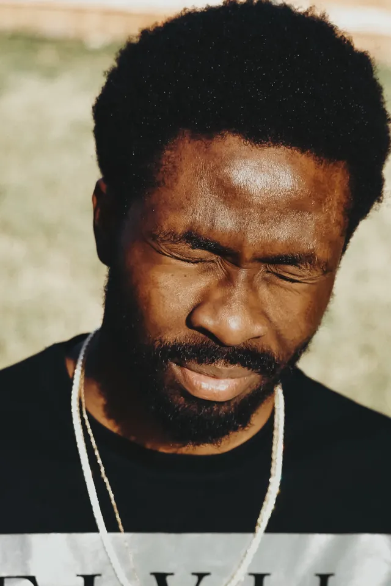
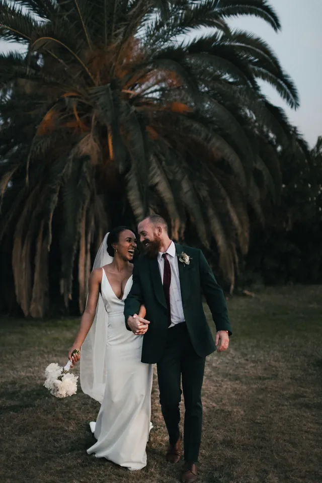
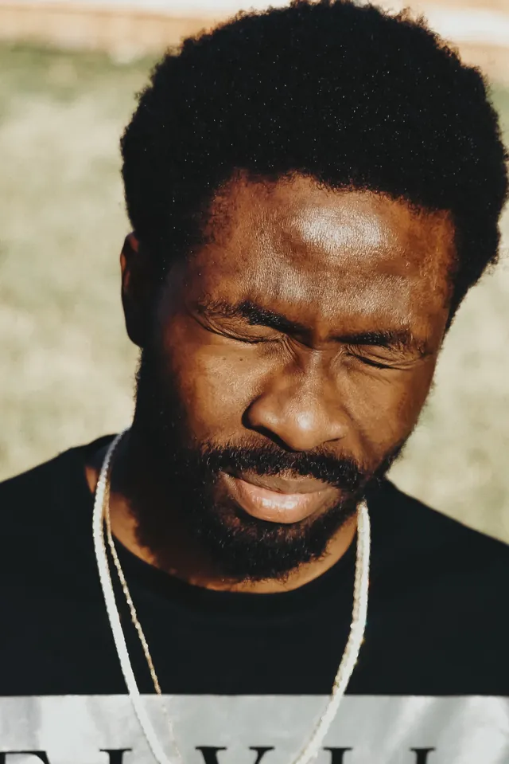
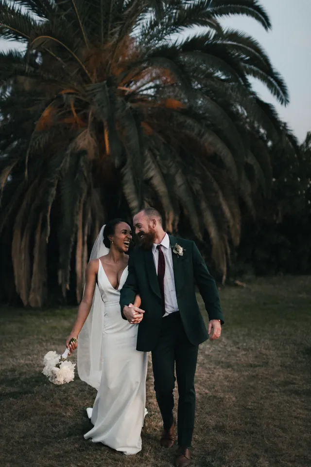

A propos de moi
Devenir photographe était pour moi une évidence. Comme si j’y étais prédestiné. Saisir un moment, une émotion, une situation, un endroit, une lumière et les rendre immortels, voilà ce qui me fait vibrer.
Nous passons notre vie à chercher le bonheur, et lorsque nous y touchons, nous n’avons qu’une envie : le figer au travers de photographies pour le savourer avec les personnes qui sont importantes à nos yeux, ou le partager au plus grand nombre. C’est ce que je vous propose : saisir ces merveilleux moments au travers de mon regard, mon approche, ma technique. Rendre ces moments immortels, afin que vous puissiez y puiser de l’amour, du bonheur, de la tendresse et de lumière à chaque fois que vous poserez les yeux sur vos photos.
 


